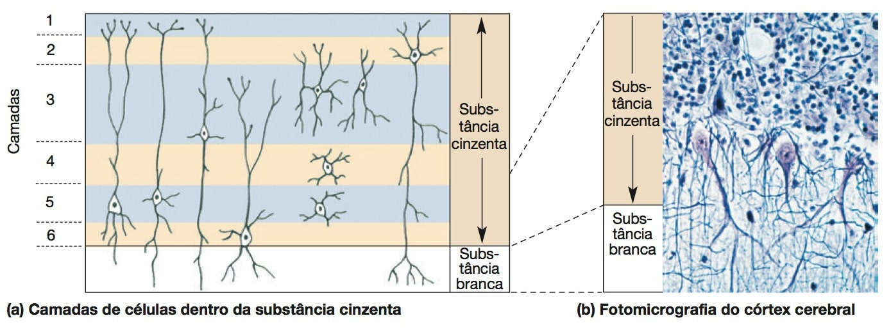
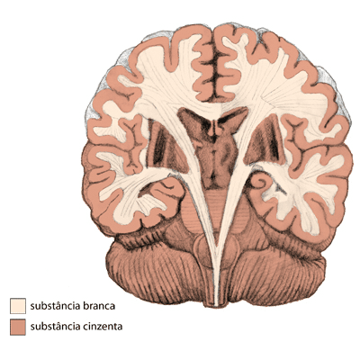

O cérebro é o centro de integrações e comando do sistema nervoso.
É constituído por duas partes: o telencéfalo e o diencéfalo.
O telencéfalo (do grego telos – extremidade, enkephalos – encéfalo), desenvolveu-se rapidamente, formando duas grandes massas que ocupam quase que toda a cavidade craniana.
Essas massas são denominadas de hemisférios cerebrais.
O desenvolvimento do diencéfalo (do grego dia – entre, enkephalos – encéfalo), foi mais restrito, limitando-se à região mediana do cérebro.
O telencéfalo e o diencéfalo apresentam amplas conexões, tanto motoras, quanto sensitivas.
O telencéfalo é o centro superior, local do controle motor geral, tomada de decisões e interpretação sensitiva.
O diencéfalo atua modulando o movimento, algumas sensibilidades se tornam conscientes no diencéfalo, controla a parte autônoma do sistema nervoso, regulação endócrina e ciclocircadiano.
Disposição de substância branca e cinza no telencéfalo
A substância cinzenta está localizada externamente, formando o córtex cerebral (do latim córtex – casca).
No interior está distribuída a substância branca.
No interior da substância branca estão localizados corpos de neurônios, denominados de núcleos da base.
Córtex cerebral (substância cinzenta): formado por corpos de neurônios, células da neuroglia e fibras nervosas amielínicas.
O córtex cerebral é heterogêneo, apresentando áreas com seis camadas celulares (neocórtex), enquanto que outras áreas apresentam três camadas celulares (paleocórtex e arquicórtex).
O córtex cerebral se distribui nos giros do telencéfalo, apresentando em cada região uma função específica.
A classificação de Brodmann é utilizada para a localização das partes funcionais do córtex cerebral (áreas de Brodmann).


Centro medular branco do cérebro (substância branca): constituído por axônios mielínicos, aferentes e eferentes ao córtex cerebral.
Núcleos da base: os núcleos da base são corpos de neurônios, bem delimitados, localizados no interior da substância branca do cérebro.
Antigamente, os núcleos da base eram denominados de gânglios da base, entretanto, essa terminologia não é mais adequada para a PCSN, sendo utilizado o termo gânglio para a PPSN.